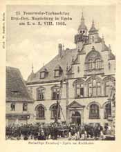

|
|
|
 FFW-Übung vor dem Rathaus
Egeln Lithografie
Markt mit Rathaus um 1970
Pfarrhaus
Rathaus
|
Egeln entstand inmitten eines bedeutenden vorgeschichtlichen Siedlungsgebietes am Knotenpunkt der Heerstraßen von Erfurt und Goslar nach Magdeburg sowie der von Halberstadt über Gröningen kommenden Poststraße. In einer Urkunde von König Otto I. wird 941 eine Ansiedlung "Osteregulun" erwähnt, als dieser seinem Patenkind Siegfried ein Kastell am bedeutungsvollen Bodeübergang vermacht. Eine Befestigungsanlage hat aber wahrscheinlich schon um 800 existiert. 965 ging Egeln an das Damenstift Gernrode. Um 1100 wurde die Neustadt nordöstlich der Bode durch die Askanier planmäßig angelegt. Die Bode, die damals südlicher verlief, trennte die alte Ansiedlung (Altemarkt) von der Neustadt. Im 12. Jh. ließ die Äbtissin von Gernrode in Egeln eine neue große Burg mit Wassergräben errichten, das alte Kastell verlor an Bedeutung und war dem Verfall preisgegeben.. Im Jahre 1206 wird der Ort mit 3 Kirchen und 1 Burg genannt. Otto Graf von Hadmersleben-Egeln ("Otto der Teufel") eroberte 1250 Burg und Dorf Egeln. Unter seiner Herrschaft erhält Egeln Befestigungsanlagen. Otto stiftete auf Veranlassung seiner Frau am 14.3.1259 das Zisterzienserinnenkloster Mariental in Altemarkt vor Egeln (an der Stelle des alten Kastells). Durch umfangreiche Stiftungen erlangte das Kloster bald wirtschaftliche Selbständigkeit. Es betrieb Landwirtschaft, hatte eine Heilkräuterzucht, eine Apotheke, eine Paramentenstickerei, eine Brauerei, eine Meierei und eine Bäckerei sowie eine Klosterschule. Die Marktrechte von Altemarkt gehen 1267 auf die Neustadt über. Um 1300 wurde das Stadtrecht verliehen und es gab eine Münzstätte. Im Jahre 1317 verkauften die Grafen von Hadmersleben-Egeln die Münze an den Magdeburger Erzbischof. Ab 1332 hatte Egeln ein Stadtwappen. 1365 wurde das Stadtrecht schriftlich bestätigt. Die Befestigungsanlagen um die Stadt werden 1438 verstärkt. Nachdem Conrad von Egeln 1416 als letzter der Hadmersleber Grafen stirbt, fällt die mächtigste Burg der Börde am sumpfigen Bodeufer in Egeln an Borchard von Barby, der sie an Erzbischof Günter II. verpfändet. Aus der Wasserburg wurde ein erzbischöfliches-domkapitularisches Amt. 1463 wird die Burg Sommersitz der Magdeburger Bischöfe. Erzbischof Ernst von Sachsen veranlaßte 1495 den Umbau zum Schloß. Kardinal Albrecht von Brandenburg verkaufte Schloß und Stadt 1524 an das Magdeburger Domkapitel. 1550 und 1617 folgten weitere Umbauten am Schloß. 1547 wird die Reformation in Egeln eingeführt, die Stadt wird evangelisch. Das Kloster hielt aber am alten Glauben fest. Die Klosterkirche wurde von 1577-1730 von der evangelischen Altemarktgemeinde mitbenutzt. Während des 30-jährigen Krieges besetzten 1625 die Kaiserlichen die Stadt; 1626 starben viele Einwohner an der Pest; 1630 schlägt der kaiserliche Feldherr Tilly zwischen Egeln und Schneidlingen ein Heerlager auf und bereitet den Sturm auf Magdeburg vor. 1632 bewohnte der schwedische Feldherr General Banér, Nachfolger des Königs Gustav Adolf, das Egelner Schloß als Heereshauptquartier. Nach dem 30-jährigen Krieg kommt Egeln an den Kurfürsten von Brandenburg, 1680 an das Herzogtum Magdeburg. Schloß und Amt werden brandenburgische, später preußische Domäne. Im 18. Jh. wurden die westlichen Wallanlagen geschliffen und dort Wirtschaftsgebäude des Gutes errichtet. Die Katharinenkirche wurde 1730 für die evangelische Altemarktgemeinde errichtet und die Marienkirche des Klosters 1732-34 erneuert. Das Kloster errichtete 30 Häuser für aus Frankreich vertriebene Hugenotten und erhält dafür im Jahre 1769 von König Friedrich II. das Recht der freien Probstwahl und der katholischen Seelsorgetätigkeit für Egeln. Im Jahre 1806 wurde Egeln durch die Franzosen besetzt. König Jérome hebt 1809 das Kloster auf. 1827 verhinderte eine Bürgerinitiative beim preußischen König die Abholzung des Egelner Waldes. Ab 1916 entstand die Egelner Flußbadeanstalt an der Mühlenbode. 1922 wurde durch die Stadtverwaltung und den Feuerwehrverein eine betonierte Uferbefestigung mit mehreren Einstiegstreppen, einem Sprungbrett und einem abgegrenzten Kinderbecken gebaut. Es gab einfache Umkleidekabinen und einen Verkaufsstand. Später wurde die Liegewiese vergrößert. Als die Flußverschmutzung zunahm, wurde der Badebetrieb eingestellt. Von 1945-90 wurde die Burg vom volkseigenen Gut landwirtschaftlich genutzt. 1988-93 wurden auf Initiative des Heimatvereins Bergfried und Turm rekonstruiert. Seit 1993 ist das Museum für Vor- und Frühgeschichte im Torhaus untergebracht. Seit 1995 ist die Burg in städtischem Besitz und wird saniert, soll zum kulturellen Zentrum Egelns werden. Am 30.5.1999 wurde die Bahnverbindung Egeln - Blumenberg eingestellt.
|